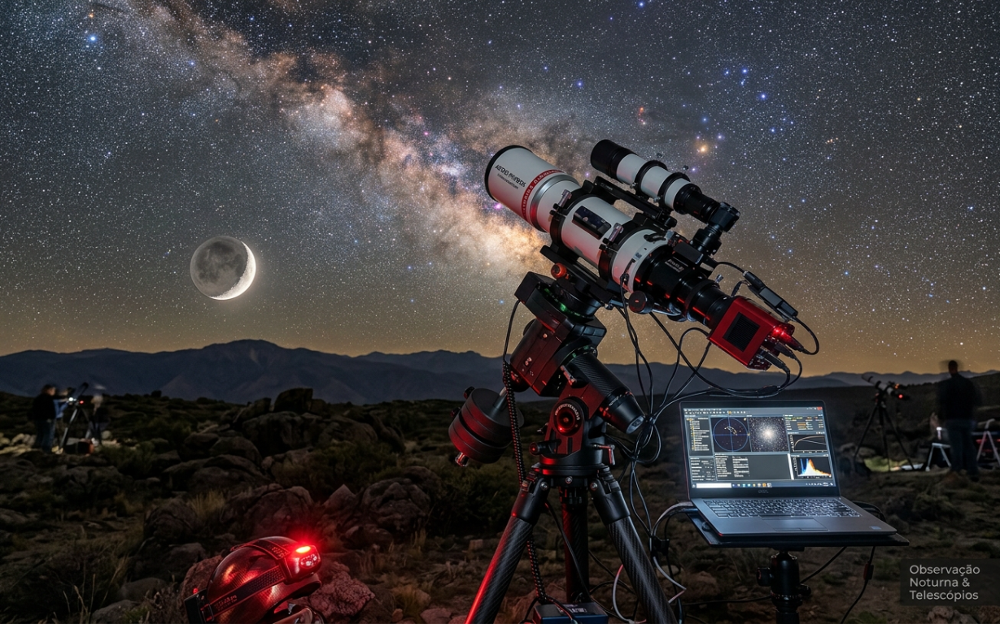

Bem-vindo ao AstroGuia
A observação contemplativa do céu é uma das práticas científicas e recreativas mais antigas da humanidade. Você não precisa de equipamentos caros ou laboratórios para dar os primeiros passos.
Nosso objetivo é fornecer conselhos diretos sobre preparação, reconhecimento das principais constelações e escolha de instrumentos básicos para começar a explorar o cosmo da sua própria casa ou campo.

🔭 Observação a Olho Nu
Aprenda a identificar planetas visíveis, a Via Láctea e as principais constelações sem nenhum equipamento visual extra.
🗺️ Cartas Celestes
Descubra como orientar-se no céu usando cartas astronômicas impressas ou aplicativos modernos de navegação estelar.
🌌 Eventos Astronômicos
Fique por dentro das próximas chuvas de meteoros, eclipses e oposições planetárias imperdíveis.